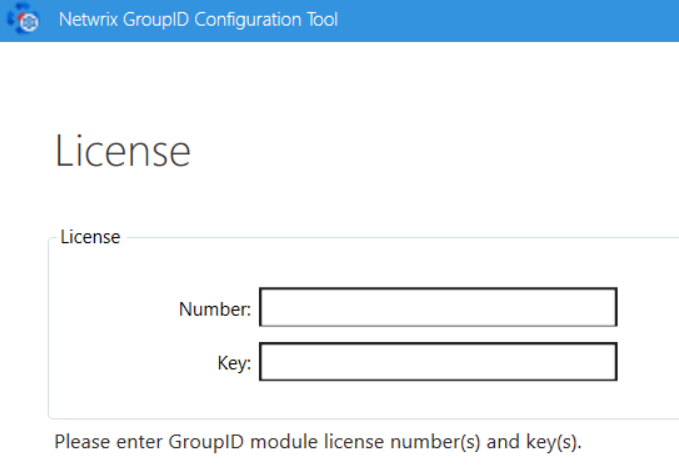
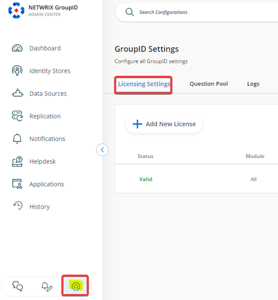
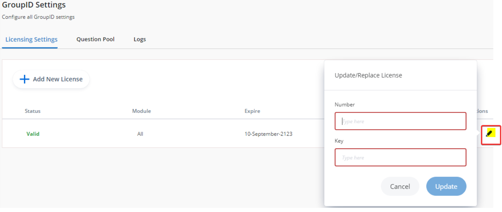

Overview
This article outlines the licensing model for Netwrix Directory Manager (formerly GroupID), including license types, activation methods, and upgrade paths.
License Types
- Evaluation License: Grants access to all modules for 30 days in a test environment. The Reports module is free and does not require a license.
-
Module License: Grants access to specific modules. Available licenses
for Netwrix Directory Manager 11 include:
- Automate Upgrade
- Complete
- Group Management
- Password Center Upgrade
- Password Management
- Self-Service Upgrade
- Suite Upgrade
- Synchronize Upgrade
- User Management
NOTE: If any of the licenses above are applied, the Reports module is automatically included at no cost.
- Full (Complete) License: Provides unrestricted access to all modules. An evaluation license can be upgraded to a full license.
Instructions
Entering License Information
- During installation, on the License page of the Configuration Tool, enter a valid license number and license key. 
- If the Next button remains disabled, retype your entry for accuracy.
- If using module-based licensing, enter any one module license during setup.
-
To add more licenses later:
- Launch the Directory Manager Configuration Tool V11 from the Windows Start menu.
- Proceed to the License page and enter additional license information.
Upgrading from an Evaluation License
- Contact Netwrix Sales to obtain a full or module license number and key.
- In the Directory Manager Admin Center, click the Settings node. 
- In the Licensing Settings dialog box, click Edit.
- Enter the new license number and key provided by Netwrix. 
- Click Update and relaunch Directory Manager.
Viewing License Information
On the License page in the Configuration Tool, you can view:
- Status: Valid or expired.
- Number: The license number you entered.
- Key: The license key associated with the number.
- Licenses: Number of machines the license covers.
- Module: The licensed module(s). "All" appears if using a full license.